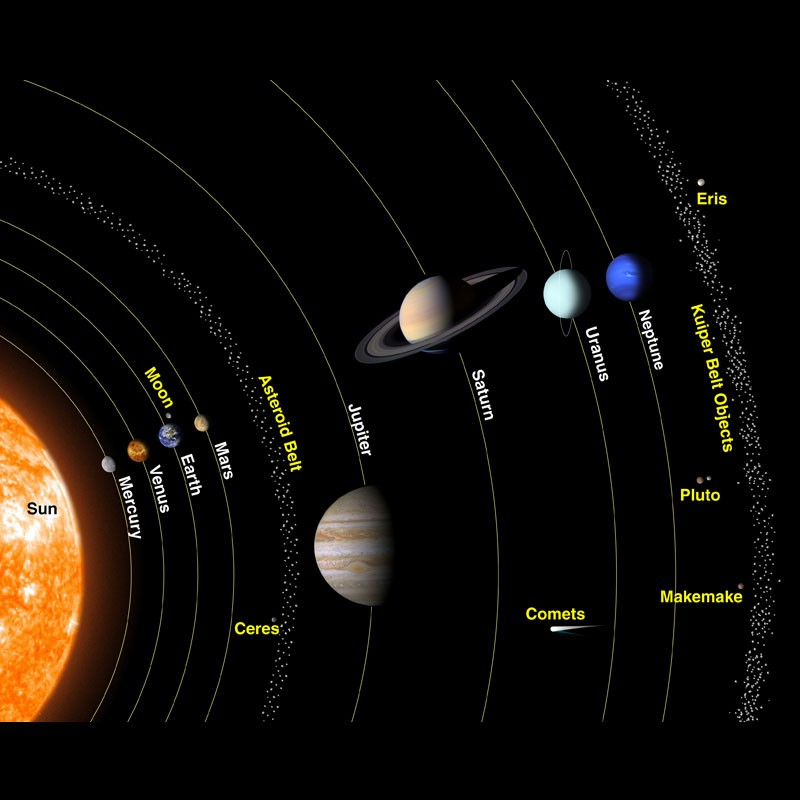

Explore the Solar System
Not gonna lie, the solar system is overrated... I'd rate it one star.
Welcome to Our Cosmic Neighborhood
Our solar system is home to the Sun, eight planets, their moons, and countless smaller objects such as asteroids and comets. From rocky worlds to giant planets, each destination has something unique to discover.
Explore the pages to learn about the Sun, Earth's Moon, and several planets through images, facts, and interactive features.
Copyrighted Images


Five Facts About the Solar System
- Most planets are orbited by moons
- Space is mostly empty
- Oceans exist beyond Earth
- Planets orbit the Sun in nearly the same plane but with slightly different orbital tilts
- Massive cataclysmic collisions formed our modern solar system
Space Joke
Why did the planets break up with the Sun?
They needed some space—but they still kept coming around.